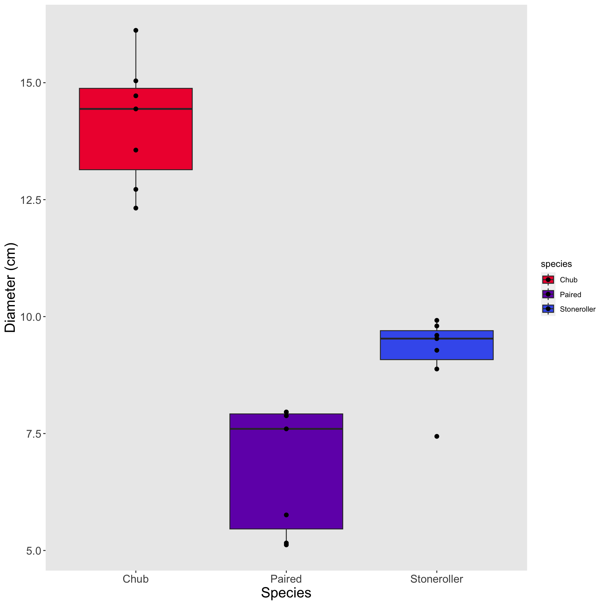
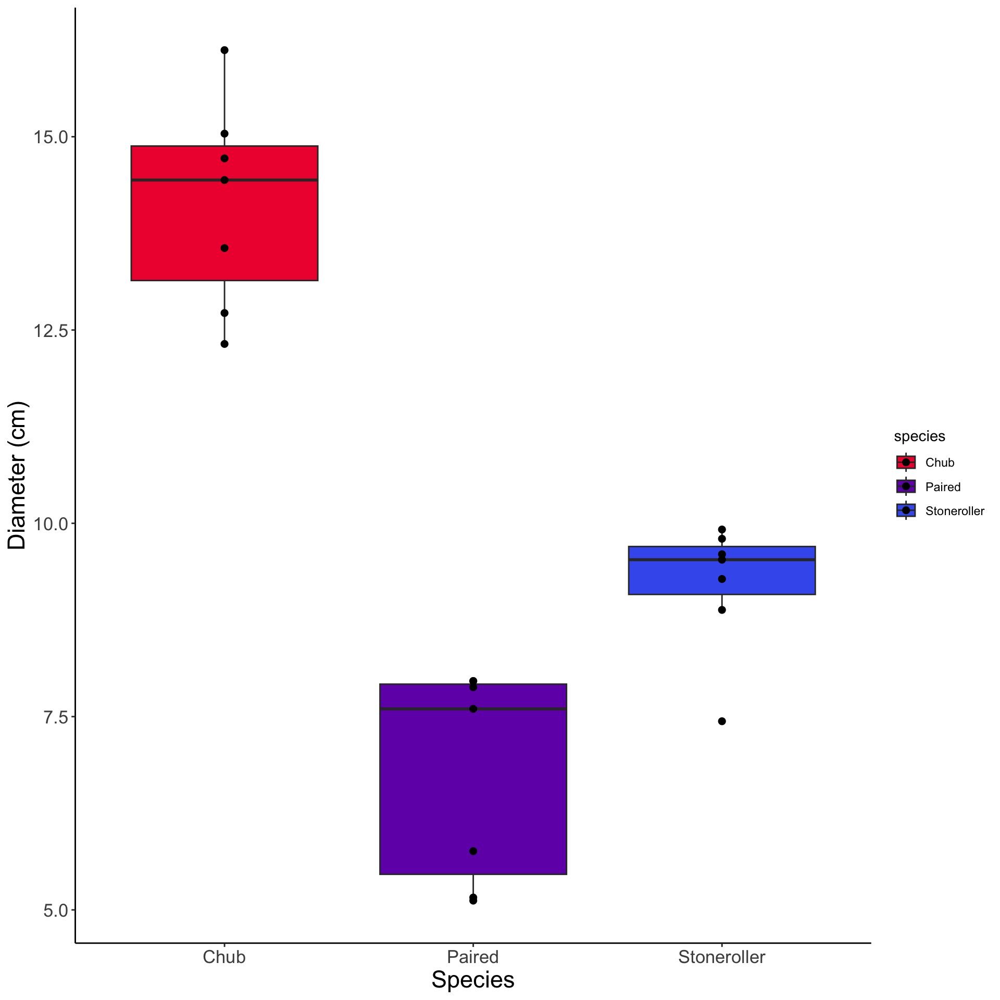
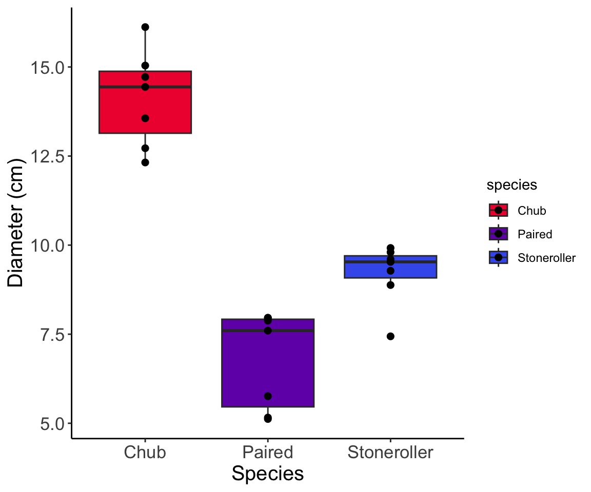
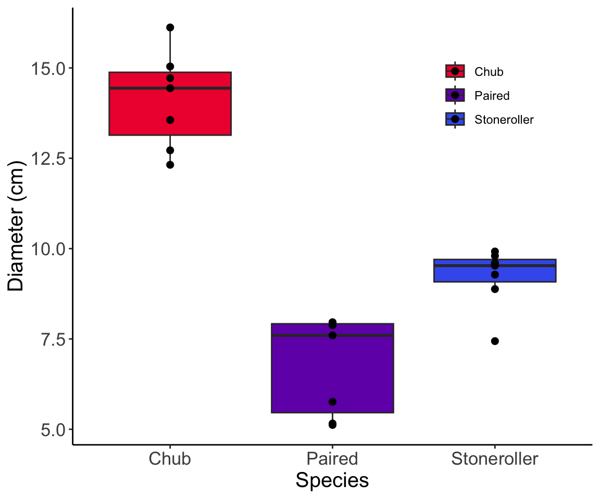
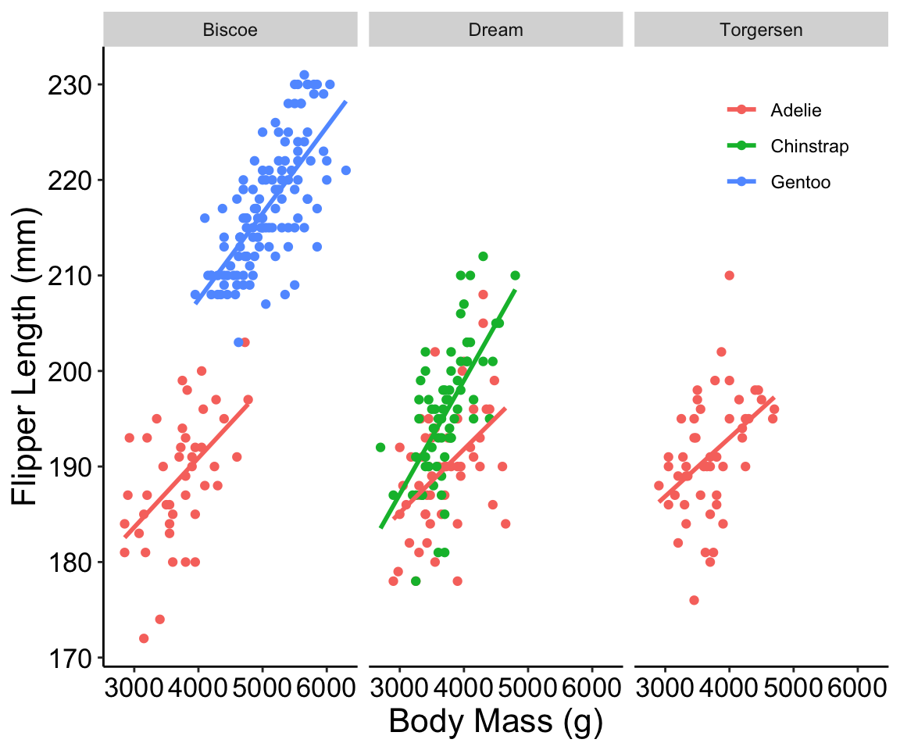
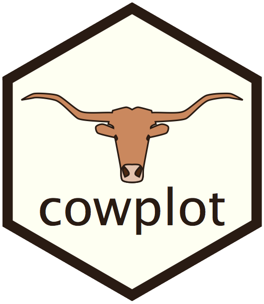

Intro to Data Science
Get Ready

- Create a script for this week
- Load
ggplot2
- Read “minnow.csv” into R and check the structure!
- Copy the final graph we made last time
- Assign the graph to an object
Remove Gridlines
- To that graph, add the following code:
theme(panel.grid = element_blank())
- What does this do to your graph?
- What happens if you add these two lines as well (inside of the
themeparentheses!)?panel.background = element_blank()axis.line = element_line(color = "black")
Remove Gridlines


Change Text Size
- Take your most recent graph
- No gridlines, no background gray square, black axis lines
- And make the following tweaks:
- Make the axis title font size 15
- Make the axis text font size 13
- What does that leave you with?
Change Text Size

Customize Legend
- To the graph you created last practice:
- Remove the legend title
- Experiment with legend placement until you’re happy
- You may put the legend wherever you’d like but:
- It should not overlap any points / boxplots
- What does that graph look like?
Customize Legend

Temperature Check
How are you Feeling?

Facet Example

ggplot(data = penguins, aes(x = body_mass_g, y = flipper_length_mm, color = species)) +
geom_point() +
facet_grid(. ~ island) +
labs(x = "Body Mass (g)", y = "Flipper Length (mm)") +
theme(legend.position = "inside",
legend.position.inside = c(0.87, 0.85),
legend.title = element_blank(),
panel.background = element_blank())
Facet
- Using the fish data, make a new graph that:
- Has nest diameter on the X axis
- Has nest depth on the Y axis
- Is a scatterplot
- Faceted by species
- Plus any additional
themetweaks you want to make!
- What does your plot look like?
Facet

Plot Grids

- Make two graphs using the fish data:
- Copy your faceted graph of diameter vs. depth
- But remove the facet by species
- Make a boxplot with flow on the y-axis and species on the x-axis
- Using
plot_grid, make a multi-panel graph with these two graphs- Make them side by side (I.e., 2 columns, 1 row)
Plot Grids

Temperature Check
How are you Feeling?